Step 1
Invite a guest
Guests scan the QR with their phone camera, or type the code. Codes expire after 2 minutes.
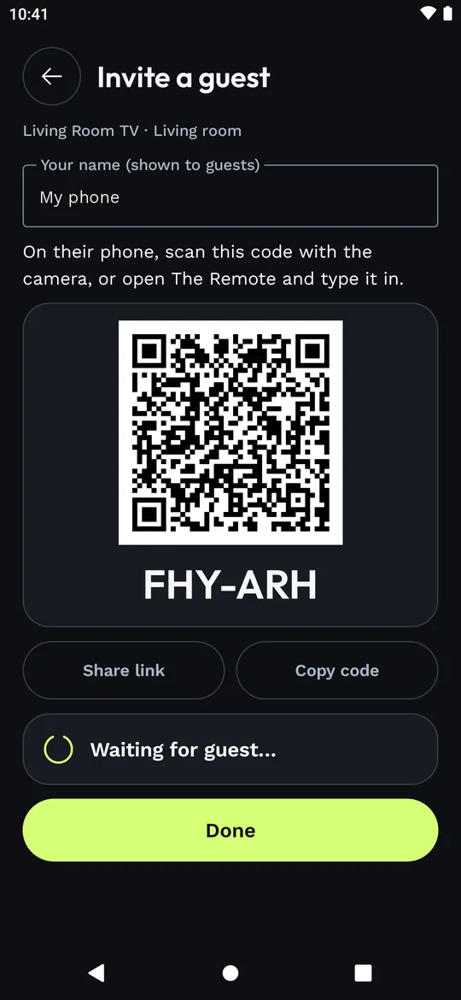
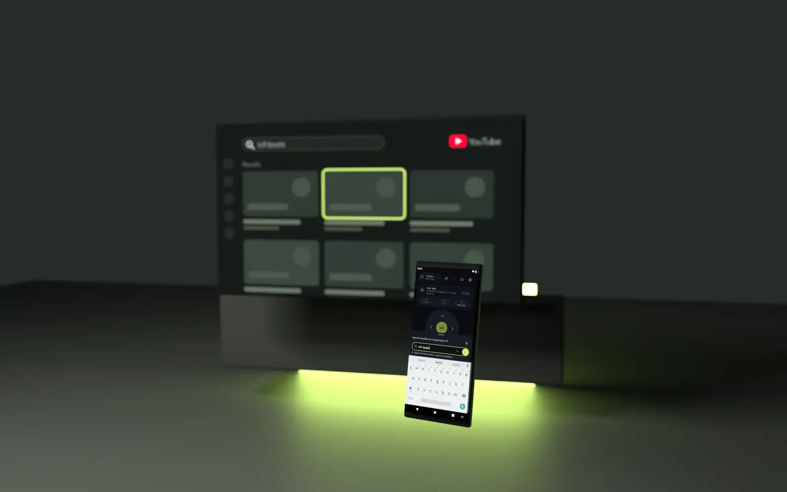
No ads. No account.
A free phone remote for Android TV and Google TV. Type a YouTube search on your phone; the results open on your TV.
01 / YouTube search
Type the search on your phone keyboard. The results open on your TV.
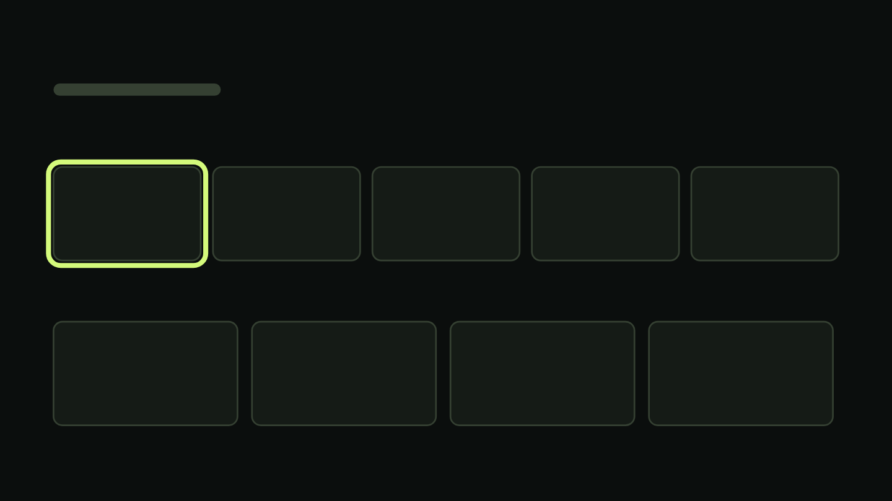
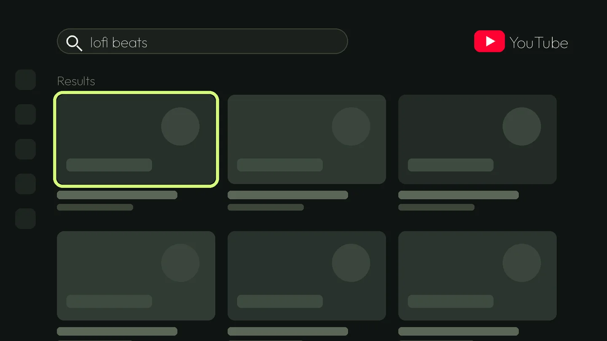
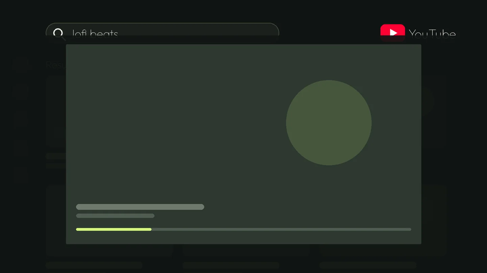
Still frames on mobile (the live 3D pin runs on desktop only).
Trackpad
Open the trackpad and your whole phone screen becomes a pad for the TV. One swipe moves the TV focus one step; a tap is OK. No pointer.
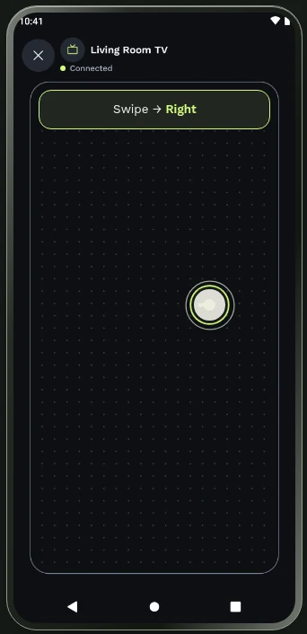
Swipe to move, tap for OK.
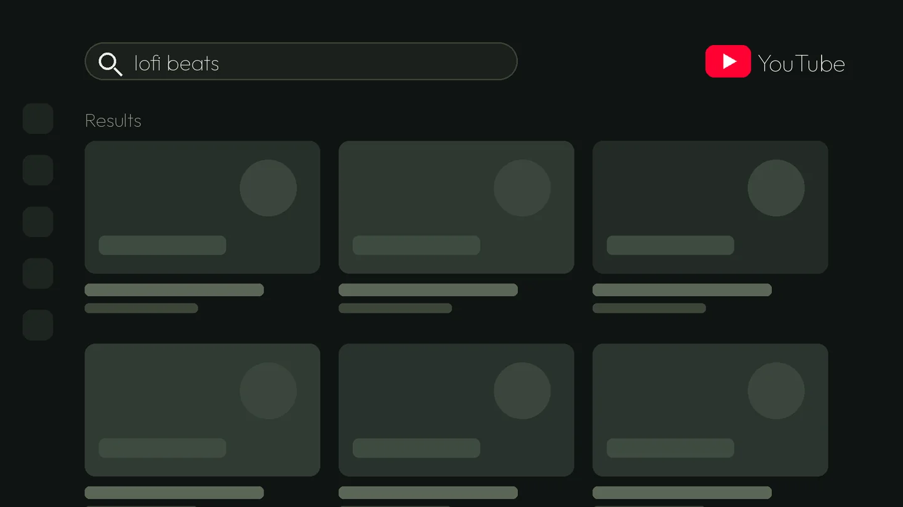
OK
One step that way. Hold at the end to repeat.
Back
Skip back / forward (varies by app)
Play/Pause
Home
A separate switch on the Gestures screen.
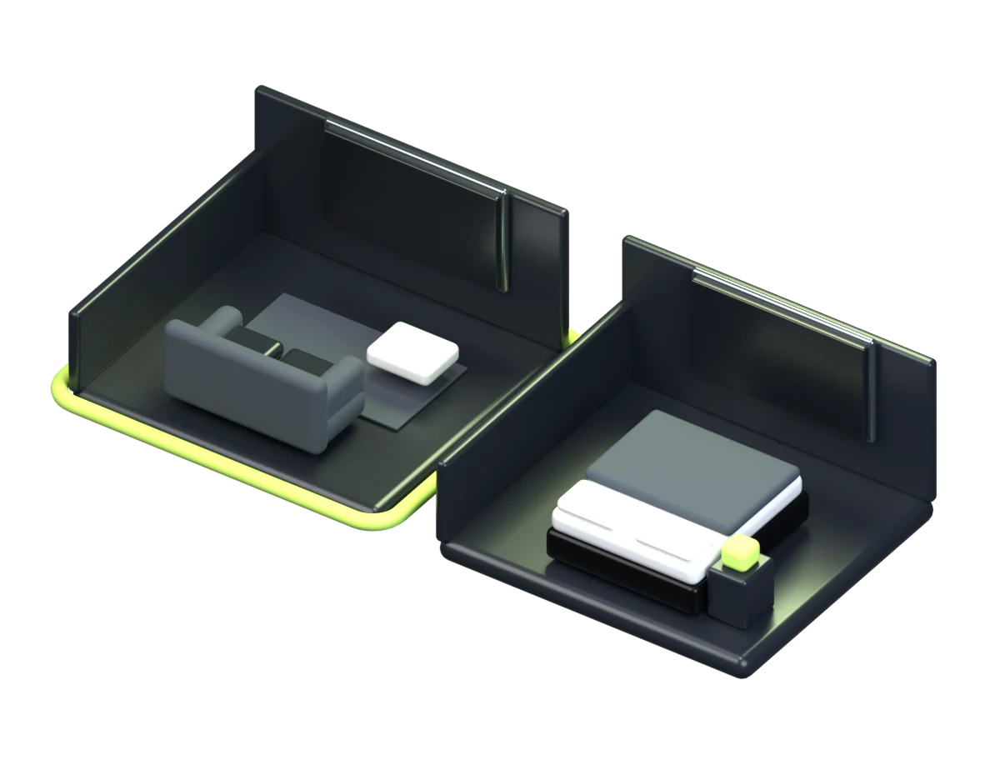
Rooms
Name each TV and pick its room when you pair it. Your saved TVs sit in one list, each with its room.

Real pairing screen: name the TV, pick the room.
Friends over
Invite a guest from The Remote. They join on your home Wi-Fi from their own Android phone.
Guests scan the QR with their phone camera, or type the code. Codes expire after 2 minutes.

Arrows, media, volume, YouTube search and links, on their own Android phone.
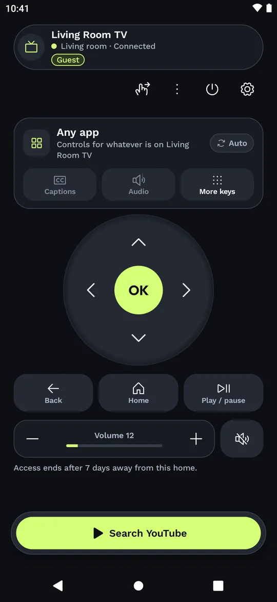
Remove guests any time, or limit one to Media and volume only.
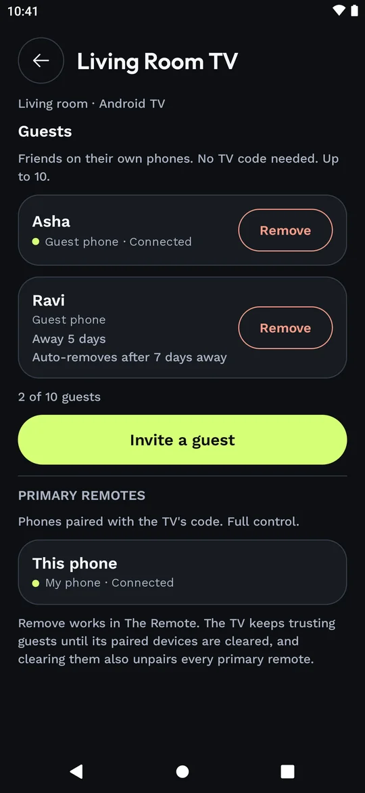
The real app
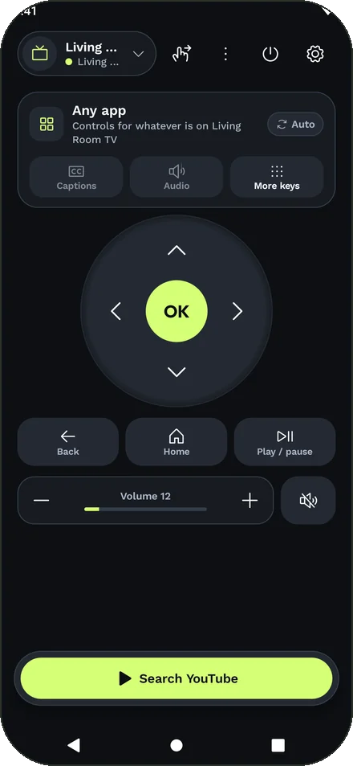
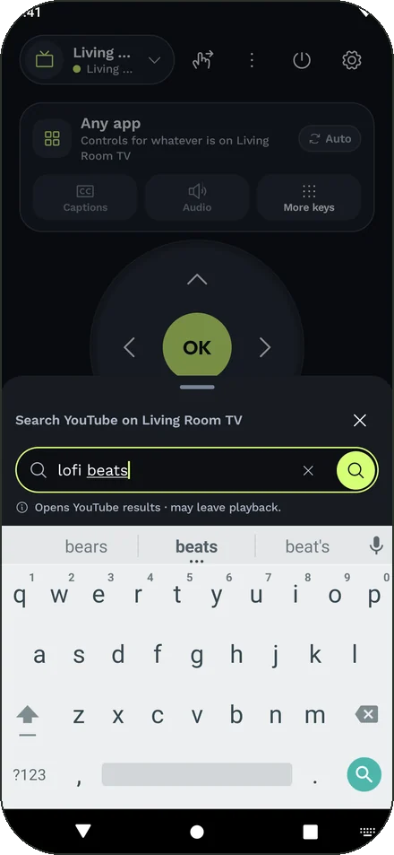
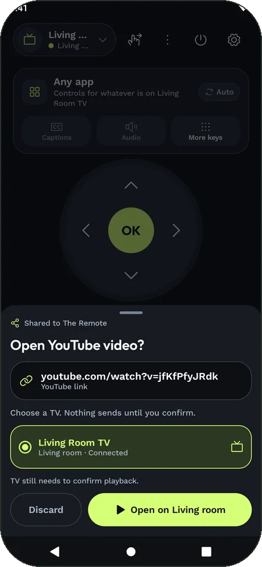
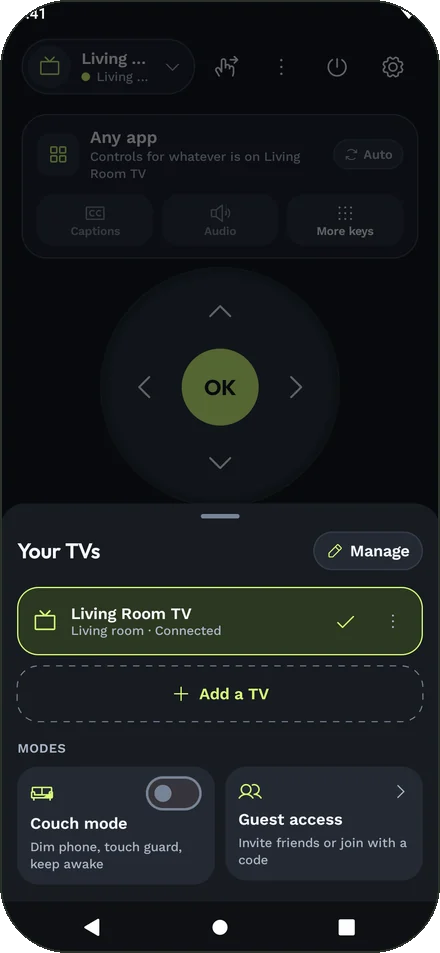
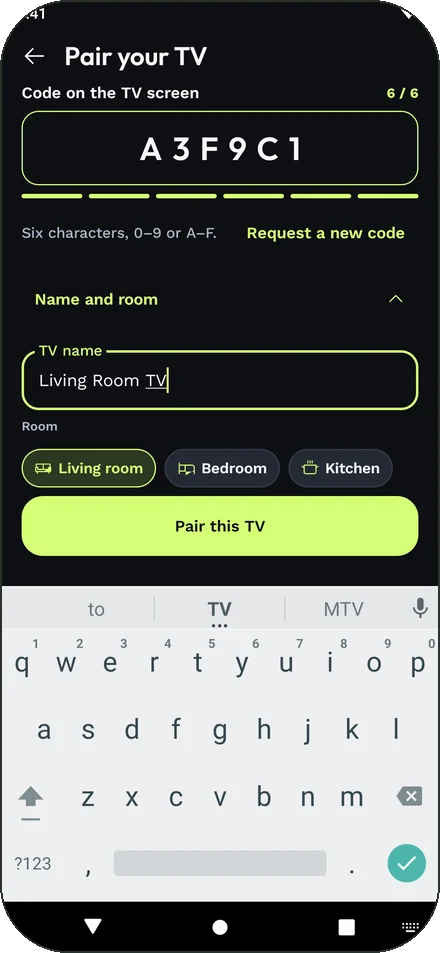
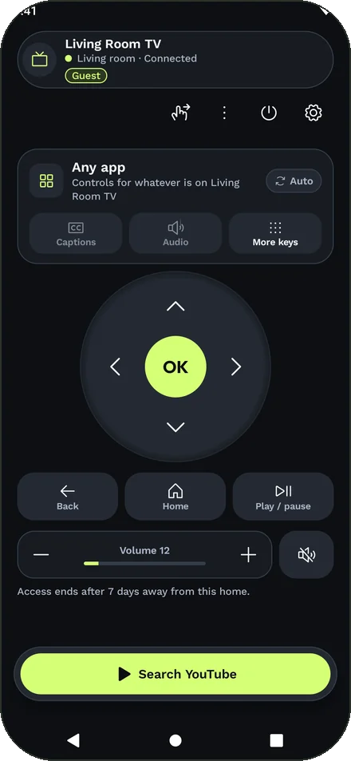
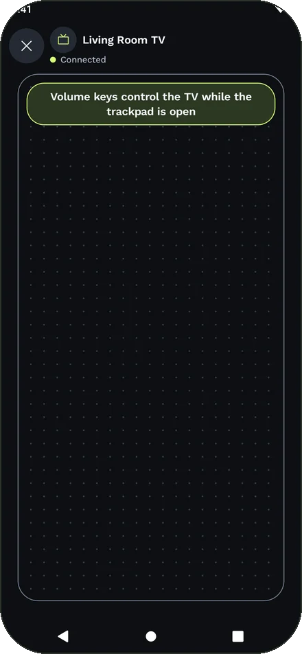
Straight facts
The live counter is the only number on the page.
Will it work?
The Remote works with Android TV and Google TV devices that support Android TV Remote Service v2. Your phone needs Android 8.0 or later. There's no iPhone version.
Remote commands go to your paired TV over the local network, without a developer cloud relay. The Remote doesn’t keep a search history.
How your data is handled ↗Get The Remote
The Remote is free for Android phones and works with compatible Android TV and Google TV.
Version 0.1.0-beta.9 · build 11 · 5.0 MiB
Scan to get it on your phone.
Requires Android 8.0 or later on your phone.
Open the downloaded file and tap Install. Android may ask you to allow installs from your browser or file manager; you can turn that off again after installing. To update, download the latest version from this page and open it. Android installs it over your current app when the app version and signing identity are compatible.
If Android rejects an update, keep the app you have and check that the file came from this page. Uninstalling removes locally saved TVs, pairings, and settings.
Compare the downloaded file's SHA-256 with this release checksum.
b93bcf1e9cf6d9061a7fe1688cbfb8d905e9ca45e6815ea9cecfd36c10ee208dA matching checksum confirms these file bytes; it does not replace Android's installation and signature checks.
When the TV needs a hand
Find the failure stage before pairing everything again.
02 / 4 min readGet the right letters into the right search field.
03 / 4 min readRecover control based on your TV’s network and setup state.
Questions, answered
Yes. No ads, no in-app purchases, no subscription, and no account.
No. You download The Remote directly from this site. Tap Download the app on your Android phone, open the file, and install it.
Download it only from this page. Android checks the app's signature before installing it, and you can compare the file's SHA-256 checksum in the download section. If Android asks you to allow installs from your browser, you can turn that off again afterwards.
No. The Remote is for Android phones running Android 8.0 or later. There's no iPhone version.
Android TV and Google TV devices with Android TV Remote Service v2. Available controls vary by model and firmware.
No. YouTube search and YouTube links go straight to the TV you pick, without YouTube on your phone. The TV's YouTube app and its version decide whether a search or link opens.
Turn the TV on and put your phone on the same home Wi-Fi as the TV, not mobile data. Guest, hotel, and school networks, and routers with AP or client isolation turned on, can stop devices from reaching each other. Then search again.
Pairing codes only last a short time. Ask the TV for a new code and enter the one on the screen now, not one from an earlier try. If no code appears, check that you picked the TV in front of you.
No. The Remote finds your TV again after days away, even if its address changed. If the TV was reset or updated, it may ask for the code shown on the TV again, and it keeps its name and room.
Let the update finish, turn the TV on, and check it's still on the same Wi-Fi as your phone. Then open The Remote. If it asks you to pair again, enter the new code shown on the TV. The TV keeps its name and room.
Open YouTube on the TV, make sure it's up to date, and try again. Search and link support depend on the TV and its YouTube version. If the TV shows a sign-in or playback message, sort that out on the TV first.
Yes. The Audio track button works in the latest version. Download it from this page to update.
Give each saved TV a name and a room, like Living room or Bedroom. Choose the TV before you send a YouTube search or link, so it opens on the screen you meant.
Yes, with Guest access. Invite them from The Remote on your phone while they're on your home Wi-Fi, and they join with a short invite code. They can scan the QR code with their phone's camera or type the code. Unused invite codes expire after 2 minutes and are only used for joining. Guests need The Remote on an Android phone (Android 8.0 or later); there's no iPhone version. By default a guest gets everything on the remote: the arrows, media keys, volume, YouTube search, link sharing, Power and the apps list, even when your phone is put away. Guests can't rename the TV, change its room, manage guests or unpair it. You can limit a guest to Media and volume only, which allows only play/pause, volume and mute. A TV can have up to 10 guests.
Guests join with the invite from your phone. If a TV doesn't accept the shared guest key, The Remote switches just that guest to their own TV code, which the TV shows once.
Open the TV's guest list on a Primary remote and tap Remove. Every Primary remote can do this. Removal is done by The Remote, not the TV, so if either phone is away, the list shows Removal pending until both phones are on your home Wi-Fi. Guests who stop coming around are also removed over time. The app counts only days the host's phone was home while the guest was off the Wi-Fi, and removes a guest after 7 such days, the next time they're on your Wi-Fi with a Primary remote there, so the timing isn't exact. You can remove anyone yourself whenever you like.
Yes. Any Android phone you pair with the code your TV shows is a Primary remote for that TV, and one phone can be a Primary remote for several TVs. Every Primary remote can invite and remove guests.
Open the trackpad and your phone's screen becomes a full-screen pad for the TV. Tap for OK. Swipe to move one step, or swipe and hold still at the end to keep moving. Tap with two fingers, or use your phone's back gesture, for Back. A three-finger tap is Play/Pause and a three-finger swipe up goes Home. A two-finger swipe left is skip back, and a two-finger swipe right is skip forward (both vary by app). Your phone's volume keys control the TV while the pad is open. The Exit button in the corner takes you back to the buttons.
Yes, on the Gestures screen, which also has the help. You can only pick from the remote's own actions, such as OK, Back, Home, Play/Pause and skip back/forward. Power is never a gesture.
The pad greys out and shows "Reconnecting to Living Room TV…" with your TV's name, and gestures pause until it's back. If the TV is asleep, the pad says so and keeps trying every minute.
Download the latest version from this page and open it. Android installs it over your current app when the app version and signing identity are compatible. If Android rejects it, keep the app you have. Uninstalling removes saved TVs, pairings, and settings.
To the TV you picked, over your local network. YouTube may process the search link under its own privacy policy. The Remote doesn't keep a search history.
Ready when you are
Free Android APK. No ads. No account.